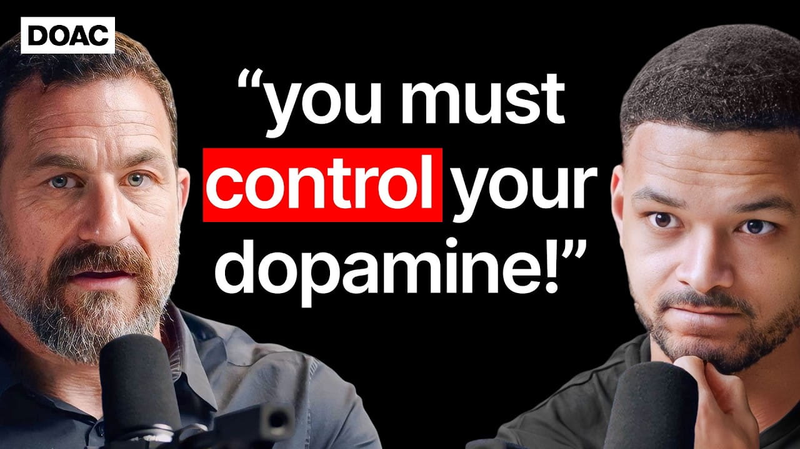

Andrew Huberman: You Must Control Your Dopamine!

Summary
Dopamine is an important neurotransmitter responsible for motivating a person and does not just serve as a chemical involved in experiencing pleasure. It is what makes us work, learn, exercise, and engage in social activities. At the same time, dopamine functions in cycles where too much of its stimulation will result in short-term peaks in production and subsequently in lower levels of dopamine in general, leading to a lack of motivation and dependence on more intense stimuli. Over-stimulation, especially using drugs or work addiction, interferes with that process.
Also, neuroplasticity is defined as the brain’s capacity to adapt, change, and develop new neural connections during the course of a lifetime. Neuroplasticity allows people to learn, develop habits, and respond to new situations, especially in cases where individuals pay attention and get emotionally involved. Other factors, like proper sleeping hours, exercising, natural daylight exposure, hydration, and stress exposure, help with dopamine regulation.
In conclusion, motivation, learning, and behavioral change are greatly influenced by neurochemical activity and other factors.
Speaker (Guest): Andrew Huberman
Interviewer / Host: Steven
Bartlett
Concept of the
Interview: Understanding Dopamine and Its Role in Motivation and Behavior
Personal Opinion
I selected this interview because the topic is personally relevant to my experiences. Over time, I realized that excessive use of short-form content, such as social media reels, had negatively affected my attention span and ability to focus. Activities I once enjoyed, including playing video games, watching long television episodes, and following lengthy anime series, became increasingly difficult to concentrate on. I had actually watched this interview before receiving this assignment because I was searching for ways to understand these changes. The scientific explanations presented by Dr. Andrew Huberman made the topic more convincing and helped me better understand how my daily habits were influencing my motivation and focus.
Reflection
In this interview, I have learned more about the role of dopamine in attention and everyday activities. Without any knowledge about the impact of dopamine regulation on one’s attention, I thought that lack of concentration was the result of a lack of willpower and discipline. Nevertheless, I have come to realize that constant overstimulation from consuming short videos can dramatically impact my focus and productivity. In order to start living a healthier life and improve my concentration, I decided to limit my consumption of short videos after having watched this interview. Despite the challenges, I managed to achieve some results in enhancing my attention span.
Date I Watched the Interview
July 10, 2026
New Vocabulary
- Dopamine: A neurotransmitter that plays a crucial role in motivation, reward, and pleasure.
- Neuroplasticity: The brain's ability to adapt and change by forming new neural connections throughout life.
- Abstinence: The practice of refraining from indulging in pleasures or habits, especially those that may be harmful.